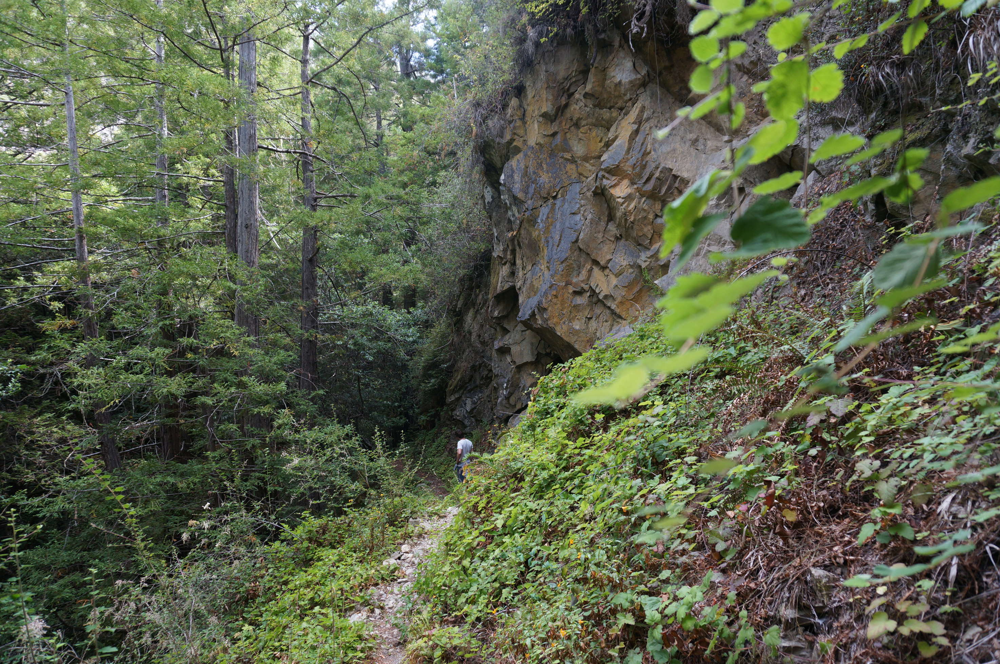
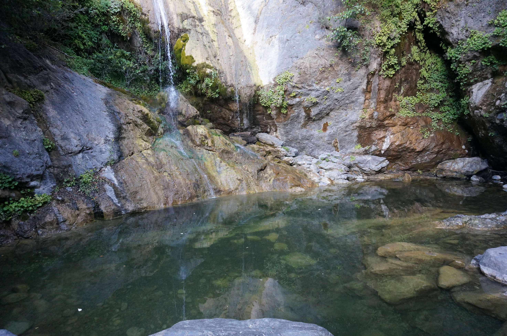

Big Sur, California
We kept driving and looking for a place well after dark, someone had told us that in Big Sur you just pull over by the side of the road and you can camp there for free. We drove past a bunch of ships passing in the night, though the saying doesn't hold for these as they glowed. Fishing? Dealing drugs? Aliens? No one knows.
We found a place by the road and pulled in for the night. The stars were insane. Sadly, I can't seem to get my camera to focus properly for these night shots, but here's an idea:
We didn't really have a clue where we'd stopped, other than it was literally next to highway 1. This is what we woke up to.

A local forest firefighter arrived early the next morning to surf and make a smoothie. He was gave us a tip for a nice 12 mile hike, which we started driving towards. We didn't get very far, because the 20 minute drive was so beautiful we kept stopping to take pictures. The fog in the mornings here sorta rolls up dem hills.

Goddamn it Berry.
Here - Florian, take this.
This is the start of our hike. It nicely shows how completely clueless we are. A word for the wise: a 12 mile hike in ~30 degree heat requires more than 1 liter of water for 3 people. You live and learn.

We thought these trees were pretty big. We knew nothing (see: giant redwoods, Oregon).

California's been suffering a 3 year drought - the grass everywhere had this colour.
End of the hike! It was beautiful, but thank god, we were pretty thirsty. Seriously people. Take water.
We were extremely hot and dusty, so asked around for a water hole where we could wash. This looked pretty amazing after a day in the heat.
The waterfall was pretty much just a trickle at this point.
Fortunately, there was a nice pool of water at the bottom to have a swim...
On the way to find a spot to sleep at, had to stop for more photos...
We drove up way up the hills (/mountains?) and found a pretty sweet spot to stay for the night.
We woke up with the sunrise and the clouds under our feet.

The hills near where we stayed looked alien...
We then drove over the hills at the coast, through an army base with loads of "don't go off the path" warnings...
...into desert...
...on our way to Sierra National Forest.